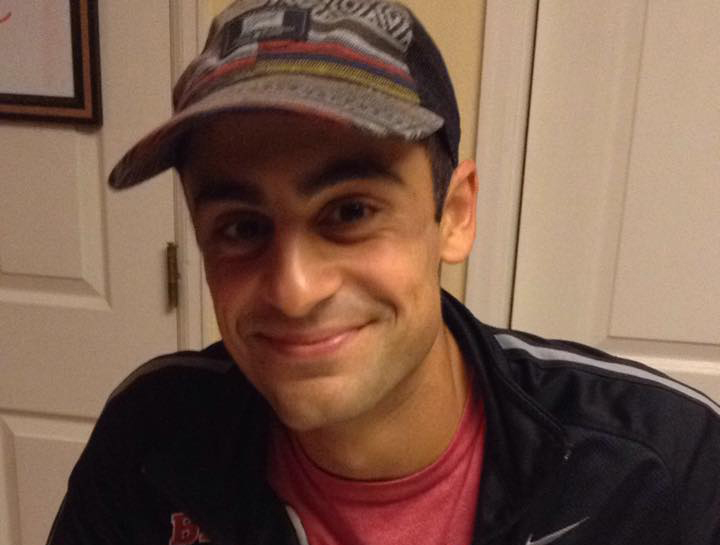

Michael Vartuli
Michael Vartuli

Information
Gender
Male
Other names
Mikey
Date of birth
May 26, 1996
Occupation
Salesman
Pets
Toby
Likes
Entitled people
Dislikes
Cheese
Overview of Life
Michael Vartuli was born in Colorado. He is eldest of Diane and Anthony’s children, so for the first two years of his life, he was an only child until Giovanna was born in 1998. He went to Franklin Elementary School, Powell Middle School, and then Arapahoe High School, where he played tennis for all four years.
Michael’s love of tennis spanned from his early childhood into his adulthood. He played tennis all throughout middle school, and then proceeded to make Alternate Varsity for the Arapahoe High School tennis team when he entered into high school. By the end of the four years, he became Captain of the team and was a Doubles Varsity player.
After high school, Michael chose to go to Biola University in California to study business. He came back to Centennial every summer to teach tennis to others for a source of income. After graduating from college, Michael got a job as a salesman for a tech company located in Texas, where he then moved. He now happily lives there and spends a lot of time with his friends and girlfriend.
Michael’s love of tennis spanned from his early childhood into his adulthood. He played tennis all throughout middle school, and then proceeded to make Alternate Varsity for the Arapahoe High School tennis team when he entered into high school. By the end of the four years, he became Captain of the team and was a Doubles Varsity player.
After high school, Michael chose to go to Biola University in California to study business. He came back to Centennial every summer to teach tennis to others for a source of income. After graduating from college, Michael got a job as a salesman for a tech company located in Texas, where he then moved. He now happily lives there and spends a lot of time with his friends and girlfriend.
◦ Giovanna and Michael once carried a cake home from King Soopers when they were young.
◦ Michael and his tennis team went to state more than once during his four years there.
◦ Michael’s middle name is Anthony, his father’s name.
◦ Michael once fooled his grandma into thinking he got a tattoo of her.
◦ Giovanna and Michael would frequently go to Target to buy clothes and movies when they were both in high school.
◦ Michael and his tennis team went to state more than once during his four years there.
◦ Michael’s middle name is Anthony, his father’s name.
◦ Michael once fooled his grandma into thinking he got a tattoo of her.
◦ Giovanna and Michael would frequently go to Target to buy clothes and movies when they were both in high school.